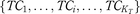
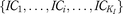

Multi-criteria-based fusion for clustering texts and images case study on Flickr
- Author(s):
- Abstract:
Purpose
This study aims to evaluate a new fusion technique of visual and textual clusters of objects from a real multimedia data-driven collection to improve the performance of multimedia applications.
Design/methodology/approach
The authors focused on using multi-criteria for clustering texts and images. The algorithm consists of these steps: first is text representation using the statistical method of weighting, second is image representation using a bag of words feature descriptors methods and finally application of multi-criteria clustering.
Findings
As an application for event detection based on social multimedia data, in particular, Flickr platform. Several experiments were conducted to choose the appropriate parameters for a better scheme of clustering. The new approach achieves better performance when aggregate text clustering is done with image clustering for event detection.
- Keywords:
- Event detection, Social media, Clustering, Data fusion, Multi-criteria decision, Multimedia data
- Type:
Research Paper - Publisher:
- Emerald Publishing Limited
- Copyright:
- © Emerald Publishing Limited 2018
Published by Emerald Publishing LimitedLicensed re-use rights only - Citation:
- Nadjia Khatir, Safia Nait-bahloul, (2018) "Multi-criteria-based fusion for clustering texts and images case study on Flickr",
Kybernetes , https://doi.org/10.1108/K-01-2018-0030 - Downloads:
- The fulltext of this document has been downloaded 21 times since 2018
1.. Available at: www.tineye.com
2.. Available at: https://images.google.com
3.. Available at: https://en.wikipedia.org/wiki/Flickr
4.. Available at: www.flickr.com/services/api/
- References
- 1.Barnard, K., Duygulu, P. and Forsyth, D. (2001), “Clustering art, in ‘computer vision and pattern recognition, 2001”, Proceedings of the 2001 IEEE Computer Society Conference on CVPR, IEEE, Vol. 2, pp. 2-434.
 [Google Scholar] 2.Bay, H., Tuytelaars, T.V. and Gool, L. (2006), “Surf: speeded up robust features”, Computer Vision-ECCV, Springer, pp. 404-417. [Crossref], [Google Scholar] 3.Blei, D.M., Ng, A.Y. and Jordan, M.I. (2003), “Latent Dirichlet allocation”, Journal of Machine Learning Research, Vol. 3, pp. 993-1022. [ISI], [Google Scholar] 4.Brans, J.P. and Mareschal, B. (2005), “Promethee methods”, Multiple Criteria Decision Analysis: State of the Art Surveys, Springer, pp. 163-186. [Crossref], [Google Scholar] 5.Cagnini, H.E., Barros, R.C., Quevedo, C.V. and Basgalupp, M.P. (2016), “Medoid-based data clustering with estimation of distribution algorithms”, Proceedings of the 31st Annual ACM Symposium on Applied Computing, ACM, pp. 112-115. [Crossref], [Google Scholar] 6.Cai, D., He, X., Li, Z., Ma, W.Y. and Wen, J.R. (2004), “Hierarchical clustering of www image search results using visual, textual and link information”, Proceedings of the 12th Annual ACM International Conference on Multimedia, ACM, pp. 952-959. [Crossref], [Google Scholar] 7.Chen, X., Ritter, A., Gupta, A. and Mitchell, T. (2015), “Sense discovery via co-clustering on images and text”, The IEEE Conference on Computer Vision and Pattern Recognition (CVPR). [Crossref], [Google Scholar] 8.De Smet, Y. and Guzmán, L.M. (2004), “Towards multicriteria clustering: an extension of the k-means algorithm”, European Journal of Operational Research, Vol. 158 No. 2, pp. 390-398. [Crossref], [ISI], [Google Scholar] [Infotrieve]9.Dhillon, I.S. (2001), “Co-clustering documents and words using bipartite spectral graph partitioning”, Proceedings of the Seventh ACM SIGKDD International Conference on Knowledge Discovery and Data Mining, ACM, pp. 269-274. [Crossref], [Google Scholar] 10.Dunn, J.C. (1973), “A fuzzy relative of the isodata process and its use in detecting compact well-separated clusters”.[Google Scholar] 11.Ester, M., Kriegel, H.P., Sander, J. and Xu, X. (1996), “A density-based algorithm for discovering clusters in large spatial databases with noise”, KDD, Vol. 96, pp. 226-231.[Google Scholar] 12.Gao, B., Liu, T.Y., Qin, T., Zheng, X., Cheng, Q.S. and Ma, W.Y. (2005), “Web image clustering by consistent utilization of visual features and surrounding texts”, Proceedings of the 13th Annual ACM International Conference on Multimedia, ACM, pp. 112-121. [Crossref], [Google Scholar] 13.Guntuku, S.C., Yaden, D.B., Kern, M.L., Ungar, L.H. and Eichstaedt, J.C. (2017), “Detecting depression and mental illness on social media: an integrative review”, Current Opinion in Behavioral Sciences, Vol. 18, pp. 43-49. [Crossref], [ISI], [Google Scholar] 14.Huang, X., Smith, M.C., Paul, M.J., Ryzhkov, D., Quinn, S.C., Broniatowski, D.A. and Dredze, M. (2017), “Examining patterns of influenza vaccination in social media”, Proceedings of the AAAI Joint Workshop on Health Intelligence (W3PHIAI), San Francisco, CA, pp. 4-5.[Google Scholar] 15.Kaufman, L. and Rousseeuw, P.J. (2009), Finding Groups in Data: An Introduction to Cluster Analysis, John Wiley & Sons, Hoboken, NJ, Vol. 344.[Google Scholar] 16.Kim, H.H. and Park, S.S. (2003), “Mediaviews: a layered view mechanism for integrating multimedia data”, Object-Oriented Information Systems, Springer, pp. 250-261. [Crossref], [Google Scholar] 17.Lowe, D.G. (2004), “Distinctive image features from scale-invariant keypoints”, International Journal of Computer Vision, Vol. 60 No. 2, pp. 91-110. [Crossref], [ISI], [Google Scholar] [Infotrieve]18.MacQueen, J. (1967), “Some methods for classification and analysis of multivariate observations”, Proceedings of the fifth Berkeley Symposium on Mathematical Statistics and Probability, Vol. 1, California, CA, pp. 281-297.[Google Scholar] 19.Ma, D., Zhai, X. and Peng, Y. (2013), “Cross-media retrieval by cluster-based correlation analysis”, 20th IEEE International Conference on Image Processing (ICIP), IEEE, pp. 3986-3990. [Crossref], [Google Scholar] 20.Nascimento, A.M. and da Silveira, D.S. (2017), “A systematic mapping study on using social media for business process improvement”, Computers in Human Behavior, Vol. 73, pp. 670-675. [Crossref], [ISI], [Google Scholar] 21.Nayak, J., Naik, B. and Behera, H. (2015), “Fuzzy c-means (fcm) clustering algorithm: a decade review from 2000 to 2014”, Computational Intelligence in Data Mining-Volume 2, Springer, pp. 133-149. [Crossref], [Google Scholar] 22.Nielsen, F. (2016), “Hierarchical clustering”, Introduction to HPC with MPI for Data Science, Springer, pp. 195-211. [Crossref], [Google Scholar] 23.Rouba, B. and Bahloul, S.N. (2013), “Towards the definition of relations between clusters in multicriteria decision aid clustering”, Procedia Computer Science, Vol. 17, pp. 134-140. [Crossref], [Google Scholar] 24.Rousseeuw, P.J. (1987), “Silhouettes: a graphical aid to the interpretation and validation of cluster analysis”, Journal of Computational and Applied Mathematics, Vol. 20, pp. 53-65. [Crossref], [ISI], [Google Scholar] 25.Salton, G. and Buckley, C. (1988), “Term-weighting approaches in automatic text retrieval”, Information Processing & Management, Vol. 24 No. 5, pp. 513-523. [Crossref], [ISI], [Google Scholar] [Infotrieve]26.Shaikh, S., Feldman, L.B., Barach, E. and Marzouki, Y. (2017), “Tweet sentiment analysis with pronoun choice reveals online community dynamics in response to crisis events”, Advances in Cross-Cultural Decision Making, Springer, pp. 345-356. [Crossref], [Google Scholar] 27.Snoek, C.G., Worring, M. and Smeulders, A.W. (2005), “Early versus late fusion in semantic video analysis”, Proceedings of the 13th Annual ACM International Conference on Multimedia, ACM, pp. 399-402. [Crossref], [Google Scholar] 28.Vijayarani, S. and Sakila, A. (2015), “Multimedia mining research-an overview”, International Journal of Computer Graphics & Animation, Vol. 5 No. 1, p. 69. [Crossref], [Google Scholar] [Infotrieve]29.Yang, J., Li, Q. and Zhuang, Y. (2002), “Octopus: aggressive search of multi-modality data using multifaceted knowledge base”, Proceedings of the 11th International Conference on World Wide Web, ACM, pp. 54-64. [Crossref], [Google Scholar] 30.Zhu, S., Aloufi, S.E. and Saddik, A. (2015), “Utilizing image social clues for automated image tagging”, IEEE International Conference on Multimedia and Expo (ICME), IEEE, pp. 1-6. [Crossref], [Google Scholar] 31.Zhuang, Y.T., Yang, Y. and Wu, F. (2008), “Mining semantic correlation of heterogeneous multimedia data for cross-media retrieval”, IEEE Transactions on Multimedia, Vol. 10 No. 2, pp. 221-229. [Crossref], [ISI], [Google Scholar] [Infotrieve]
[Google Scholar] 2.Bay, H., Tuytelaars, T.V. and Gool, L. (2006), “Surf: speeded up robust features”, Computer Vision-ECCV, Springer, pp. 404-417. [Crossref], [Google Scholar] 3.Blei, D.M., Ng, A.Y. and Jordan, M.I. (2003), “Latent Dirichlet allocation”, Journal of Machine Learning Research, Vol. 3, pp. 993-1022. [ISI], [Google Scholar] 4.Brans, J.P. and Mareschal, B. (2005), “Promethee methods”, Multiple Criteria Decision Analysis: State of the Art Surveys, Springer, pp. 163-186. [Crossref], [Google Scholar] 5.Cagnini, H.E., Barros, R.C., Quevedo, C.V. and Basgalupp, M.P. (2016), “Medoid-based data clustering with estimation of distribution algorithms”, Proceedings of the 31st Annual ACM Symposium on Applied Computing, ACM, pp. 112-115. [Crossref], [Google Scholar] 6.Cai, D., He, X., Li, Z., Ma, W.Y. and Wen, J.R. (2004), “Hierarchical clustering of www image search results using visual, textual and link information”, Proceedings of the 12th Annual ACM International Conference on Multimedia, ACM, pp. 952-959. [Crossref], [Google Scholar] 7.Chen, X., Ritter, A., Gupta, A. and Mitchell, T. (2015), “Sense discovery via co-clustering on images and text”, The IEEE Conference on Computer Vision and Pattern Recognition (CVPR). [Crossref], [Google Scholar] 8.De Smet, Y. and Guzmán, L.M. (2004), “Towards multicriteria clustering: an extension of the k-means algorithm”, European Journal of Operational Research, Vol. 158 No. 2, pp. 390-398. [Crossref], [ISI], [Google Scholar] [Infotrieve]9.Dhillon, I.S. (2001), “Co-clustering documents and words using bipartite spectral graph partitioning”, Proceedings of the Seventh ACM SIGKDD International Conference on Knowledge Discovery and Data Mining, ACM, pp. 269-274. [Crossref], [Google Scholar] 10.Dunn, J.C. (1973), “A fuzzy relative of the isodata process and its use in detecting compact well-separated clusters”.[Google Scholar] 11.Ester, M., Kriegel, H.P., Sander, J. and Xu, X. (1996), “A density-based algorithm for discovering clusters in large spatial databases with noise”, KDD, Vol. 96, pp. 226-231.[Google Scholar] 12.Gao, B., Liu, T.Y., Qin, T., Zheng, X., Cheng, Q.S. and Ma, W.Y. (2005), “Web image clustering by consistent utilization of visual features and surrounding texts”, Proceedings of the 13th Annual ACM International Conference on Multimedia, ACM, pp. 112-121. [Crossref], [Google Scholar] 13.Guntuku, S.C., Yaden, D.B., Kern, M.L., Ungar, L.H. and Eichstaedt, J.C. (2017), “Detecting depression and mental illness on social media: an integrative review”, Current Opinion in Behavioral Sciences, Vol. 18, pp. 43-49. [Crossref], [ISI], [Google Scholar] 14.Huang, X., Smith, M.C., Paul, M.J., Ryzhkov, D., Quinn, S.C., Broniatowski, D.A. and Dredze, M. (2017), “Examining patterns of influenza vaccination in social media”, Proceedings of the AAAI Joint Workshop on Health Intelligence (W3PHIAI), San Francisco, CA, pp. 4-5.[Google Scholar] 15.Kaufman, L. and Rousseeuw, P.J. (2009), Finding Groups in Data: An Introduction to Cluster Analysis, John Wiley & Sons, Hoboken, NJ, Vol. 344.[Google Scholar] 16.Kim, H.H. and Park, S.S. (2003), “Mediaviews: a layered view mechanism for integrating multimedia data”, Object-Oriented Information Systems, Springer, pp. 250-261. [Crossref], [Google Scholar] 17.Lowe, D.G. (2004), “Distinctive image features from scale-invariant keypoints”, International Journal of Computer Vision, Vol. 60 No. 2, pp. 91-110. [Crossref], [ISI], [Google Scholar] [Infotrieve]18.MacQueen, J. (1967), “Some methods for classification and analysis of multivariate observations”, Proceedings of the fifth Berkeley Symposium on Mathematical Statistics and Probability, Vol. 1, California, CA, pp. 281-297.[Google Scholar] 19.Ma, D., Zhai, X. and Peng, Y. (2013), “Cross-media retrieval by cluster-based correlation analysis”, 20th IEEE International Conference on Image Processing (ICIP), IEEE, pp. 3986-3990. [Crossref], [Google Scholar] 20.Nascimento, A.M. and da Silveira, D.S. (2017), “A systematic mapping study on using social media for business process improvement”, Computers in Human Behavior, Vol. 73, pp. 670-675. [Crossref], [ISI], [Google Scholar] 21.Nayak, J., Naik, B. and Behera, H. (2015), “Fuzzy c-means (fcm) clustering algorithm: a decade review from 2000 to 2014”, Computational Intelligence in Data Mining-Volume 2, Springer, pp. 133-149. [Crossref], [Google Scholar] 22.Nielsen, F. (2016), “Hierarchical clustering”, Introduction to HPC with MPI for Data Science, Springer, pp. 195-211. [Crossref], [Google Scholar] 23.Rouba, B. and Bahloul, S.N. (2013), “Towards the definition of relations between clusters in multicriteria decision aid clustering”, Procedia Computer Science, Vol. 17, pp. 134-140. [Crossref], [Google Scholar] 24.Rousseeuw, P.J. (1987), “Silhouettes: a graphical aid to the interpretation and validation of cluster analysis”, Journal of Computational and Applied Mathematics, Vol. 20, pp. 53-65. [Crossref], [ISI], [Google Scholar] 25.Salton, G. and Buckley, C. (1988), “Term-weighting approaches in automatic text retrieval”, Information Processing & Management, Vol. 24 No. 5, pp. 513-523. [Crossref], [ISI], [Google Scholar] [Infotrieve]26.Shaikh, S., Feldman, L.B., Barach, E. and Marzouki, Y. (2017), “Tweet sentiment analysis with pronoun choice reveals online community dynamics in response to crisis events”, Advances in Cross-Cultural Decision Making, Springer, pp. 345-356. [Crossref], [Google Scholar] 27.Snoek, C.G., Worring, M. and Smeulders, A.W. (2005), “Early versus late fusion in semantic video analysis”, Proceedings of the 13th Annual ACM International Conference on Multimedia, ACM, pp. 399-402. [Crossref], [Google Scholar] 28.Vijayarani, S. and Sakila, A. (2015), “Multimedia mining research-an overview”, International Journal of Computer Graphics & Animation, Vol. 5 No. 1, p. 69. [Crossref], [Google Scholar] [Infotrieve]29.Yang, J., Li, Q. and Zhuang, Y. (2002), “Octopus: aggressive search of multi-modality data using multifaceted knowledge base”, Proceedings of the 11th International Conference on World Wide Web, ACM, pp. 54-64. [Crossref], [Google Scholar] 30.Zhu, S., Aloufi, S.E. and Saddik, A. (2015), “Utilizing image social clues for automated image tagging”, IEEE International Conference on Multimedia and Expo (ICME), IEEE, pp. 1-6. [Crossref], [Google Scholar] 31.Zhuang, Y.T., Yang, Y. and Wu, F. (2008), “Mining semantic correlation of heterogeneous multimedia data for cross-media retrieval”, IEEE Transactions on Multimedia, Vol. 10 No. 2, pp. 221-229. [Crossref], [ISI], [Google Scholar] [Infotrieve]
Article
1.Introduction
The big bang of the computer of the 2000s is the Web 2.0 that has brought a lot of revolutionary changes in the way the content of the World Wide Web is generated and used. One of these recent phenomena is the social media platforms such as Flickr, YouTube, Facebook and Twitter, the most used services with search engines.
Nevertheless, these data generated from Web 2.0 and exchanged by users are a real gold mine because they reflect aspects of real-world societies. As a result, the analysis of these data has become a promising subject of study occupying many fields and disciplines, such as journalism, marketing, health and sociology. Everyone is interested in analyzing online communities.
In the field of marketing, for example, companies have found a perfect fit, because from the content created by citizens, they are able to identify influential trends and profiles that can improve their business processes (Nascimento and da Silveira, 2017).
Social scientists are analyzing online communities and studying community dynamics (Shaikh et al., 2017).
In the field of health, researchers are interested in predicting diseases such as influenza (Huang et al., 2017) and in identifying certain behavioral disorders such as depression (Guntuku et al., 2017).
From all the applications cited above, the event detection task is distinguished by its social impact and complexity. In general, the detection of events refers to the problem of automatically identifying significant incidents that people attend and are presented in multimedia content via websites, such as natural disasters, earthquakes, sports events and music concerts, as well as strikes and protests among others. As a result, there are several questions for the research community: how to collect these data? How to turn this ocean of disordered and heterogeneous data into knowledge to help opinion leaders and business manager make decisions?
Data mining methods have been developed significantly in recent years with the hope of better organizing, analyzing and representing the knowledge generated by the phenomenon of digitalization and Big data. Indeed, the models and the correlations established by these tools allow not only to understand the present but also to anticipate individual and collective behaviors.
There are many research challenges inherent in detecting events from Web data. Among these themes is the analysis of multimedia documents. Multimedia document is inherently multi-modal. For example, given an image document, the legend of an image and the color histogram of this image are two separate modalities, as each of them gives a different aspect of the data, and it has its own dependency relationship with other modalities but they are complementary. Indeed, the legend of the image has a tendency to describe the events captured in the image, whereas the color histogram describes the visual information.
Most current systems for multimedia document management (such as search engines), operate only on one type of media at a time, often it is the textual information. Thus, in addition to documents texts, even images and videos are indexed from their corresponding or surrounded texts (such as captions, file name, tags, descriptions or comments on the image or video) regardless of the characteristics intrinsic to the image or video.
Unfortunately, the search results are not always conclusive. For example, using boat as a query keyword, the resulted images belong to different concepts, such as a sea boat, a cooking recipe with the title Egg boat, a watch brand or a traditional China event Dragon Boat Festival.
To solve such ambiguities, other categories of research systems use only visual features of the image, such as color, texture or shape in their search and indexing mechanism. There is talk of search engines by content (CBIR: content-based image retrieval). In this case, the queries must be expressed using the same descriptors, color, shape or texture. Among these systems are mentioned QBIC IBM.
The search can also be performed using an image query built by the user (reference image or picture example). Among these systems, there are the tool TinEye[1] and images.Google[2]. Indeed, we know that since the summer of 2011, the system images.Google has been working upon a query image search and offering a reverse image search.
Unfortunately, this kind of system has two major drawbacks: first, the requests based only on visual features are not intuitive public searching and the second problem is related to the problem of semantic gap.
Finally, other promising work aims to simultaneously combine textual and visual features; among these works, there are the OCTOPUS system (Yang et al., 2002) and Mediaviews (Kim and Park, 2003). Current research in the multimedia field is oriented toward the application of data mining methods to extract knowledge from multimedia data sets (Vijayarani and Sakila, 2015).
Among these methods is clustering, which is a useful technique to enhance many multimedia applications. The aim of clustering technique or also called unsupervised classification method is to group objects into homogeneous classes based on their features. It consists of representing a cloud of objects in a set of clusters or groups that are similar to each other and dissimilar from the objects belonging to other groups.
Most of the traditional clusterings are generally uni-modal and show a weak performance when applied on multimedia data. This paper aims to design a new fusion clustering technique based on multicriteria paradigm to improve the performance of multimedia applications.
The reminder of the paper is organized as follows. In Section 2, we review some prior works on using clustering techniques for multimedia documents analysis. In Section 3, we present our multimedia clustering framework. In Section 4, we provide an illustrative example of our fusion strategy. Section 5 is reserved to experimentations. Finally, we conclude the paper and discuss our vision to future work.
2.Related work
Social media is a platform for social communication and interaction that connect digital entities to each other. These sites host data of different kinds that are generated and shared by the users of these platforms (for example, text messages, comments and images).
Data redundancy is a significant problem on these sites. Indeed, users are likely to generate similar objects on some hot topics or popular events (for example, world cup), such as using sharing functions such as Retweet of Twitter and Share links of Facebook. By grouping similar objects, we can generate a more concise representation that will be very useful for many social media applications, such as indexing, automatic event identification and trend analysis.
Unsupervised clustering is a solution for this kind of problem and an essential technique of datamining whose purpose is to form groups of objects (observations, events, items, entities and points) called “Clusters” based on their characteristics or relations.
However, as mentioned above, most basic clustering methods are only applied to one media at a time, whereas the problem we are relying on is grouping of data and information of different nature for better management of multimedia applications. Thus, the approaches proposed in the existing literature can be distinguished according to the relations they seek between different modalities.
Barnard et al. (2001) considered the combination of textual and visual information. Instead of annotating an image with a single label, the authors proposed a multi-label appearance annotating different parts of the image (called blobs). A hierarchical clustering algorithm was used in which each node generates words and blobs on the basis of probability distributions given for this node. Top-level nodes generate more general terms and lower-level nodes generate more specific terms. Then the EM algorithm (Expectation Maximization) was used to fit the model. Their method was tested on 10.000 images collected from the Fine Arts museum of San Francisco and their associated texts provided by volunteers. However, this approach can only handle two types of modality (words and blobs), and to treat several other conditions, the model and the learning procedure must be revised.
Cai et al. (2004) also used a hierarchical clustering to group texts, images and hyperlink. The authors extracted the relevant texts from the images using a vision algorithm to segment the text from images. Thereafter, they proceeded in two steps: first, text and hyperlink were used to group images. The resulting groups were combined again using local descriptors images (or low level as color and texture). Their method was applied on images crawled from Google and Flickr.
Other methods are based on graphs partitioning. Dhillon (2001) proposed a conventional method bipartite graph partitioning for clustering two modalities, such as documents and words. The experiments were conducted on abstracts collected from popular sites, such as Medline, Cranfield and Cisi. Gao et al. (2005) extended this method to handle more terms; in their method of tripartite graph, they considered three modalities, words, images and characteristics of the images, and data were crawled from the photography museums and galleries.
In the same context, Zhuang et al. (2008) proposed a uniform cross-media correlation graph (UCCG)-based learning for grouping three medias (texts, images and audio). Their methods are applied on collection of multimedia cyclopedia educational, E-Business and science Web pages with videos.
Ma et al. (2013) allowed to express in a formal way the information shared by the multi-modal objects in a collection of multimedia documents and proposed a cluster-based correlation analysis (CBCA) method to group texts and images collected from Sina Weibo data set.
Authors interested in visual sense disambiguation, commonly use two modalities at minimum. Chen et al. (2015) investigated a co-clustering framework on texts and images to disambiguate the multiple semantic sense of polysemy words. Their method was tested on 1,000 Web pages downloaded from Google images search engine. The approach proposed in our paper is similar to that proposed by Barnard et al. (2001), in the context where we try to combine both visual (images) and textual data (descriptions, titles and tags). On the other hand, our proposed work is different from that of Cai et al. (2004) in the fact that the authors make the segmentation to extract the text from the image. While our textual data do not form an integral part of the image, we treat texts and images separately. Finally, our method of merging the textual and visual clusters differs from the one proposed by Chen et al. (2015) since the authors used co-clustering for the fusion, whereas we use the multi-criterion paradigm for the fusion of heterogeneous clusters. Table I summarizes some of the representative works in the field of multi-modal clustering by specifying the type of media used and the clustering method used. In the last row, we position our work among these works.
3.The proposed multimedia clustering framework
In this section, we present an overview of our approach. The first research on the multimedia data merged the features of different modalities to obtain a single vector output and conduct the analysis. This method is called Early fusion (Snoek et al., 2005). Recent approaches analyze separately each features’ category and then aggregate different results. This methods is called decision fusion that outperforms the latest methods. Our model multimedia data clustering that we propose is a merger decision model. It requires the development of several modules, as shown in the following framework (Figure 1): the collection of multimedia documents is first divided into two sub-corpus: the corpus of text documents and images corpus to treat the two modalities separately. Thus we distinguish two different modules of representation content of the text and image content. The third module is to find relationships between each pair of documents with information groups (clusters) formed previously to form new groups of multimedia documents. We detail in the following different modules of our approach.
The purpose of the text content representation is to filter information and keep only what is relevant in the context of the study and then encode the data to retain only the most discriminating description parameters. The noise reduction is needed to make sense of the results obtained after data classification. The development of this module requires two steps, namely, preprocessing text and weighting terms.
In general, the natural language contains a large number of stop words that do not have special meaning, such as prepositions, articles, conjunctions, pronouns, etc. Besides, there are some common content words that have very high frequency in almost all of the text, which does not distinguish the text. The idea is to reduce complexity of subsequent computational tasks by reducing the vocabulary size and discarding non-important data. In addition, words with similar composition like cats and catty can be mapped to the root cat. This process is for reducing inflected or sometimes derived words to their stem word.
In our contribution, we used Bag-Of-Words representation for the texts. This method includes counting the frequency of occurrence of each word in each document and counting the frequency of occurrence of all the words in all the documents which will produce the frequency matrix. The importance of a word in a document can be quantified using several known models. The majority of information retrieval systems are based on statistical methods of weighting terms, which is the model TF-IDF initially proposed by (Salton and Buckley, 1988). The underlying idea is to combine two factors TF (term frequency) quantifying the local weighting of a term in the document, and a second factor IDF (inverse document frequency) overall weighting which measures the overall importance of the term the collection of documents. More frequent is a term in the collection, less importance it has. We use the formula given by Salton and Buckley (1988): IDF = log(N∕ni) with N the size of the collection (of documents) and ni the number of documents containing the term ti. The output of this module is a set of vectors, such as for each text, we associate a numerical vector value of weighted terms.
The content of an image is shown as in the text document as a set of visual terms which it requires for us to extract visual vocabulary denoted as V = {v1,…,vi,…,v|V|}. The process involves two steps: the first step is to break down each image of the collection into segments or thumbnails using one of the methods of descriptors of the points of interest such as SIFT descriptor (scale invariant feature transform) (Lowe, 2004) or SURF descriptor (speeded up robust features) (Bay et al., 2006). The second step is to apply a clustering algorithm such as k-means (MacQueen et al., 1967) on all the thumbnails associated with the images of the collection. The centers of the clusters are retained as terms of the visual vocabulary. By analogy to the treatment of text documents, each image can be represented by a weight vector vij representing the number of occurrences a visual vj term appears in image i. With the bag of words, we can represent an image as a normalized histogram of the accounts of the frequencies of words in every image. Figure 2 shows that each image is represented by a frequency histogram.
Some clustering problems cannot be solved properly using conventional algorithms as in the case of cluster aggregation which requires more than one criterion for optimization. In general, the aggregation solutions of Clustering schemas taking each criterion separately are not optimal, so the question arises: how to find the best solution responding as far as possible all the criteria? clustering algorithms use existing attributes, which means that there is no order of preference on this scale, and there is therefore no order between clusters.
In the field of multi-criteria decision support, we distinguish three main problems. The choice problem, the classification problem and the sorting problem. The problem of choice can be formulated as a problem of identifying a subset of potential actions (or alternatives) as small as possible and containing the “best” actions (or alternatives). The classification problem is the assignement of each of the potential actions into a predefined category. Finally, the sorting problem consists to sort the potential actions from the most satisfactory to the least satisfactory. Recently, researchers have studied the automatic detection of groups (clusters) in the multi-criteria context such as in the work of De Smet and Guzmán (2004) that proposed an extension of the algorithm k-means to solve the problem of multi-criteria. The main contribution of their work is based on the definition of a distance measurement based on binary relations preferences among alternatives. The mentioned work was the starting point for many researchers who have tried not only to detect groups (clusters) in a multi-criteria context but also to identify the relationships between these clusters (Rouba and Bahloul, 2013). We formalize our aggregation model of clustering schemas based on the model described above as follows:
Consider a collection of multimedia documents CMD, where MDi is the ith document in the collection. Each document MDi is split into text and image: a text noted Ti ∈ RT and an image noted Ii ∈ RI. After considering each space RT and RI separately, we obtain two partitions schemes: a partition of texts noted PT containing KT textual clusters  and a partition of images noted PI containing KI visual clusters .
In a decision-making process, the decision-maker often has to make a choice based on multiple criteria (cost, security, environment and human resources) on which he or she expresses his or her preferences. The decision with multiple criteria is difficult because the criteria are often conflicting. Several methods have introduced the notion of partial aggregation where we only partially appreciate the consequences of different judgments (Brans and Mareschal, 2005), and their principle consists of comparison of the alternatives in pairs with the means of binary relation denoted S. Let A be a set of objects, of candidates, decisions, etc. The binary relation S on A is a subset of the Cartesian product of A × A, defined as follows: ∀ ai, aj ∈ A
Inspired by these methods, we compare pairs of multimedia documents based on the concepts of preference relations. Usually, there are three preference relations to consider: Indifference denoted (I), preference denoted (P) and incomparability (R). So to compare for each pair of multimedia documents, we formally define these relationships as follows: ∀ MDi, MDj ∈ CMD:
It is said that the multimedia document MDi is indifferent I from the multimedia MDj (and vice versa) if and only if both their textual labels are similar and their image labels are similar and therefore classified, respectively, in the same textual cluster or group denoted TCx, and in the same cluster visual denoted ICx. A special case is that each multimedia document is indifferent with itself. It is said that multimedia documents MDi and MDj have a preferential relation P if and only if at least their textual parts are similar or their images are similar (one of them and not both at the same time). Finally, it is said that the multimedia document MDi is incomparable R to multimedia MDj (and vice versa) if and only if neither their textual labels nor their image labels are similar (that is to say belonging to different groups). For more details of the matrix preference generation, the pseudo code is given in Algorithm 1:
Algorithm 1 Preference matrix generation
Input :n: number of multimedia documents.
Text_labels: a vector of textual labels of length n.
Visual_labels: a vector of textual labels of length n
Output: A symmetric Preference_matrix of size n × n
fori=1 to ndo
forj=i to ndo
if ((Textual_labels[i] = Textual_labels [j])&&
(Visual_labels
[i]=Visual_labels[j]))
then
Preference_matrix[i, j] ← “I”
Preference_matrix[j, i] ← “I”
else if ((Textual_labels[i] = Textual_labels[j])&&(Visual_labels[i] ≠ Visual_labels[j]))
then
Preference_matrix[i, j] ← “P+”
Preference_matrix[j, i] ← “P-”
else if ((Textual_labels[i]≠Textual_labels [j])&&(Visual_labels[i]=Visual_labels[j]))
then
Preference_matrix[i, j] ← “P-”
Preference_matrix[j, i] ← “P+”
else
Preference_matrix[i, j] ← “R”
Preference_matrix[j, i] ← “R”
end if
end
end
Our clustering model is based on the idea that all documents inside the same cluster are similar in that they are preferred, indifferent and incomparable to more or less the same documents. To determine this similarity, we define a profile for each multimedia document. We define profile P(MDi) of the document MDi ∈ CMD like a 4-tuple < I(MDi), P+(MDi), P-(MDi), R(MDi) > as follows: ∀ MDi, MDj ∈ CMD:
According to the four preferences defined above, each multimedia document will have four profiles. For example, for the profile P1(MDi) or denoted I(MDi) is the set of all the multimedia documents that have an indifference preference relationship I with MDi and so on for the other three preferences relationship. The process of generating profiles is described in Algorithm 2:
Algorithm 2 Profil matrix generation
Input : Preference_matrix of size n × n previously generated
Output: A Profile_matrix(list(), nrow=n, ncol=4) :is a matrix of lists where n is the number of multimedia documents in rows and four columns, each one present one preference relationship
fori=1 to ndo
forj=1 to ndo
if (Preference_matrix[i,j]= “I”) then
Profile_matrix[[i, 1]] ← Profile_matrix[[i, 1]]+{j}
else if (Preference_matrix[i,j]= “P+) then
Profile_matrix[[i, 2]] ← Profile_matrix[[i, 2]]+{j}
else if (Preference_matrix[i,j]= “P-”) then
Profile_matrix[[i, 3]] ← Profile_matrix[[i, 3]]+{j} else Profile_matrix[[i, 4]] ← Profile_matrix[[i, 4]]+{j}
end if
end
end
Based on the previous definitions, especially the definition of multimedia document profiles, we can measure the numerical distance between each pair of documents. The matrix that associates to each pair of documents (MDi, MDj) a distance d(MDi, MDj) is called similarity matrix or distance matrix denoted d of size (n × n) where n is the size of the collection. Since similarities metrics usually used with clustering algorithms are not suitable for this kind of problem, we use the metric described in the works of De Smet and Guzmán (2004). This metric assumes that two objects are so close that their profiles are similar. Thus, since given P(MDi) a profile of the multimedia document MDi, the distance between two documents MDi and MDj is calculated as follows:
Algorithm 3 distance matrix generation
Input : Profile_matrix of size n × 4 previously generated
Output: A distance_matrix is a symmetric matrix of size n × n of floats
fori=1 to ndo
distance_matrix[i, i] ← 0
end
fori=1 to n - 1 do
forj=i+1 to ndo
s ← 0
fork in 1 to 4do
s←s+length(intersect(Profile_matrix[[i,k]], Profile_matrix[[j,k]]))
end
distance_matrix[[i, j]] ← 1 - (s/n)
distance_matrix[[j, i]] ← distance_matrix[[i, j]]
end
end
4.Illustrative example
To show how our proposed model works in practice, in this subsection, we present an illustrative example of the fusion method step by step according to the model process. Table II illustrate eight images as multimedia documents in the first row present the labels of images clustering and in the second row present clustering labels of textual tags associated to those images.
We start by generating the preference matrix based on the definition of the relations between each pair of document; this matrix is a square matrix. If we take for example MD1 and MD2 (Table II), we notice that the text of the MD1 is classified in the cluster number one (Label 1) and the text of the MD2 is classified in another cluster (Label 2). Their images are also classified in different clusters. Thus, we deduce that the two documents are incomparable (R). If we now take MD2 and MD5 (Table II), we notice that their texts are classified in the same textual cluster (Label 2) as well as their images that belong to the same visual cluster (Label 2), so the relation between MD2 and MD5 is indifference noted (I) (Table III) Aand so on. Then, the profiles matrix is generated (Table IV) according to the preference matrix, where each multimedia document has four profiles. A profile is a set of multimedia documents sharing the same preference relation. For example, given the preferences matrix previously generated, the documents that share the indifference relation with MD2 are: MD2 itself and MD5, and so on. Next step is to generate the distance matrix (Table VI) by computing the distance between document pairs according to equation (3) and using the profiles matrix previously generated (Table IV). For example:
This matrix is the input of any clustering algorithm, for example, k-means. The labels in Table V are generated using k-means with k = 3 and it is the final result of fusion clustering.
5.Experimental results
In this section, we first present the data set devoted to investigating our proposed method. Second, we conduct a set of experiments on both textual data and then on images for selecting the best performing clustering algorithm and the best number of clusters for the data set by using internal and external metrics. We also experiment the choice of the best image descriptor involved in the bag of visual word construction. Third we prove the effectiveness of our fusion method. Finally, we give some interpretation about the resulted multimedia clusters.
One of the most popular social media platforms is Flickr[3], which is both a photo library that host more than 6 billion images and a social network with more than 87 million registered members. Flickr allows developers from all over the world to recovers the data and it provides access to objects in the database of this website; so images can be easily collected with its related metadata “title, description, tags” through APIs[4]. It allows using keywords as a query that reflects a specific subject. The data set used in this paper was collected by crawling images posted on Flickr about “migrant crisis” using Flickr API during the third quarter of 2017. We obtained the most recent 500 public images uploaded and shared by users registered on this platform. While each document in the context of our study represents an image with some related information, its title, some extra description and several tags give additional knowledge about the image. Table VII presents some example images taken from our data set with their associated texts.
For each image, a title, a description and tags are associated with; such information is of the same nature and vocabularies, reason for which we performed a joint. So the title and its description are treated as a single textual document. The same preprocessing and term weighting steps for text representation which were explained in the previous section are applied. In addition, a set of tags is associated with each image. They are keywords, so that there is no need to apply pre-processing phase on those data. We compare different kinds of clustering algorithms according to their heuristic: the partitioning algorithm (K-means), medoid-based algorithm (Clara) (Kaufman and Rousseeuw, 2009; Cagnini et al., 2016), ascending hierarchical algorithm (hierarchical) (Nielsen, 2016), the fuzzy clustering algorithm (Fuzzy c-means) (Nayak et al., 2015) and the algorithm based on the density (Dbscan) (Ester et al., 1996). Determining the number of clusters is also an open problem, which is largely exploited. We perform a test for each algorithm, by varying the number of clusters in the range [3-12] for two internal validation metrics Silhouette (Rousseeuw, 1987) and Dunn (1973). Dunn index is a metric type which is based on an internal validation scheme, where the results are based on the evaluation of clustered data itself. It evaluates if sets of clusters are compact, with a small variance between members of the cluster, and well separated, where the means of different clusters are sufficiently far apart, as compared to the within-cluster variance. For both Silhouette and Dunn indexes, a higher value indicates better clustering. The graph in Figure 3 indicates that the best values of the index “Dunn” (0.5839) and “Silhouette” (0.4042) are obtained by the algorithm “Hierarchical” with (K = 3), k being the number of clusters.
In this section, we select the appropriate parameters to apply images clustering; we have two parameters to experiment, descriptor methods and clustering algorithm. Each image is annotated with a list of tags assigned carefully by human, and we can then assume that those are representative to the visual content as mentioned by Zhu et al. (2015). Thus the evaluation is done by checking our resulted clustering of images with tags as ground-truth for external validation metrics, namely, accuracy and Hamming. Hamming: this metric measures how many times a document-label pair is misclassified by computing the average Hamming loss distance between two vectors, namely, Ytrue and Ypred. Ytrue is one-dimensional label array that indicates ground truth (correct) labels of all the documents in the data set and Ypred is also one-dimensional array that indicates predicted labels returned by a classifier. Hamming loss distance denoted as L–hamming is defined as follows: where ypj is the predicted label for the document MDj and yj is the label generated by the classifier for this same document. n is the number of clusters’ labels in the data set. l(ypj, yj) = 1 if (ypj≠yj) and l(ypj, yj) = 0 otherwise.
Accuracy is a well-known metric that measures how often the classifier makes the correct prediction of labels. It is the ratio between the number of correct predictions and the total number of predictions (the number of document in the dataset) and it is defined by the following equation: where TP represents a number of true positives (i.e. the number of documents correctly labeled by a classifier as belonging to the same class according to the ground truth), TN represents a number of true negatives (i.e. the number of documents correctly labeled by a classifier as belonging to different class according to the ground truth), FP represents a number of false positives (i.e. the number of documents incorrectly labeled by a classifier as belonging to the same class according to the ground truth) and finally, FN represents a number of false negatives (i.e. the number of documents incorrectly labeled by a classifier as belonging to different class according to the ground truth).
In this section, we compare between two methods, SIFT and SURF, that are involved in previous section for the bag of visual word construction and image representation. The results in Figure 4 show that SIFT is computationally slow relative to SURF although they are closely the same accuracy. Thus, SURF will be used in this work. The feature vector that was used in this work is a 64-dimensional vector of visuals terms.
With text content, the validation is based on performance parameters, which we choose as internal index, but with images we have a real problem with execution time so that our experiments are based on choosing the fastest method. The best value in Figure 5 is the one that takes less time, which is Fuzzy c-means algorithm with (0.016) min, and the worst is the hierarchical algorithm (1.008) min. Thus, the SURF descriptor and Fuzzy c-means method are used for clustering images, while keeping the same number of cluster obtained in textual experiments (k = 3).
Finally, after having done all the experiments concerning the choice of parameters, the following section detailed the final and fused clustering results scheme with interpretation. Table VIII indicates that our fusion approach of several clustering algorithms optimizes the results accuracy and made the event and topic detection more effective.
We now interpret the content of the three multimedia clusters obtained by the fusion module, by extracting the main probable topics from textual data associated to each cluster using Latent Dirichlet Allocation (Blei et al., 2003).
6.Discussion
The results obtained after application of the multimodal strategy of textual clusters and visual clusters reveal that the data sets (images and texts) that are put on line on the Flickr platform concerning the current topic of the crisis refugees are classified into three main clusters: The topic of the first cluster is around the children refugee and who are deprived of learning and education. The second cluster refers to “Idomeni” which is the most violent way. Indeed, for the past three years, and especially since 2014, this global drama called migration unfolded in Idomeni, which is on the border between Macedonia and Greece. Refugees and migrants make a long trip to Europe, who lead souls to defenseless ruthless humiliation, abuse, theft and kidnapping in the Mafia claws. Finally, the third cluster refers to humanitarian organizations and parliament conferences like the European Parliament taken place in Brussels on March 2016 to solve refugee crisis. The results are shown in Figure 6. Due to copyright restrictions, we refer the three representative images of each cluster by their original URLs.
7.Conclusion
To cope with the enormous amount of data available on social media platforms, the research community will need to find robust tools to organize and filter that content to extract relevant information from the data and activities of internet users on the Web. In this context, we have proposed a general framework for the detection of events in multimedia documents hosted on these platforms using unsupervised classification methods. The approach of this work required three major contributions: it was necessary both to implement tools for text clustering, image clustering and finally designing and implementing the multimodal fusion strategy based on the principle of multi-criteria relations, usually found in the area of decision-making. We conducted several experimentations on social multimedia data, in particular Flickr platform that contains images and textual metadata. Results show that our approach achieves better performance when we fuse text clustering with image clustering for event and topic detection in real-world data. At the moment, we are quite satisfied with the results obtained since the final multimedia clusters obtained by our method reveal several events related to the context in which the photos as well as their associated metadata were taken by the users of the platform. Among these events we mention the organization of several international conferences and summit to provide solutions to the topic studied in this paper. The results also revealed that the photos are not taken only by cyber users but also by several international organizations such as United Nations High Commissioner for Refugees or International Monetary Fund. In future work, we would focus on other social media platforms, such as YouTube, LinkedIn and Facebook, with other kind of data like shared videos and more effective features and clustering methods, which make the events and topics detection better.
Figure 1. The proposed framework
Figure 2. Bag-of-words methods: histogram of words frequencies
Figure 3. Internal validation metrics
Figure 4. SIFT and SURF comparison
Figure 5. Time execution of each baseline clustering algorithm
Figure 6. Examples of images from each cluster
|
| Paper | Media used | Methods used |
|---|---|---|
| Barnard et al. (2001) | Texts + images | Hierarchical clustering + EM |
| Dhillon (2001) | Documents + words | Bipartite graph partitioning |
| Cai et al. (2004) | Texts + images + hyperlinks | Hierarchical clustering |
| Gao et al. (2005) | Images + words | Tripartite graph partitioning |
| Zhuang et al. (2008) | Images + audios + texts | Graph-based learning |
| Ma et al. (2013) | Texts article’s + images | Cluster-based correlation analysis |
| Chen et al. (2015) | Texts + images | Co-clustering |
| Our work | Texts + images | A new multi-criteria-based clustering |
Table I. Summary of related works
|
| Multimedia documents | MD1 | MD2 | MD3 | MD4 | MD5 | MD6 | MD7 | MD8 |
|---|---|---|---|---|---|---|---|---|
| Textual clusters labels | 1 | 2 | 3 | 3 | 2 | 3 | 3 | 2 |
| Visual clusters labels | 1 | 2 | 3 | 3 | 2 | 1 | 2 | 1 |
Table II. Illustrative example
|
| MD1 | MD2 | MD3 | MD4 | MD5 | MD6 | MD7 | MD8 | |
|---|---|---|---|---|---|---|---|---|
| MD1 | I | R | R | R | R | P− | R | P− |
| MD2 | R | I | R | R | I | R | P− | P+ |
| MD3 | R | R | I | I | R | P+ | P+ | R |
| MD4 | R | R | I | I | R | P+ | P+ | R |
| MD5 | R | I | R | R | I | R | P− | P+ |
| MD6 | P+ | R | P− | P− | R | I | P+ | P− |
| MD7 | R | P+ | P− | P− | P+ | P− | I | R |
| MD8 | P+ | P− | R | R | P− | P+ | R | I |
Table III. Preferences matrix
|
| I | P+ | P− | R | |
|---|---|---|---|---|
| MD1 | {MD1} | {} | {MD6, MD8} | {MD2, MD3, MD4, MD5, MD7} |
| MD2 | {MD2, MD5} | {MD8} | {MD7} | {MD1, MD3, MD4, MD6} |
| MD3 | {MD3, MD4} | {MD6, MD7} | {} | {MD1, MD2, MD5, MD8} |
| MD4 | {MD3, MD4} | {MD6, MD7} | {} | {MD1, MD2, MD5, MD8} |
| MD5 | {MD2, MD5} | {MD8} | {MD7} | {MD1, MD3, MD4, MD6} |
| MD6 | {MD6} | {MD1, MD7} | {MD3, MD4, MD8} | {MD2, MD5} |
| MD7 | {MD7} | {MD2, MD5} | {MD3, MD4, MD6} | {MD1, MD8} |
| MD8 | {MD8} | {MD1, MD6} | {MD2, MD5} | {MD3, MD4, MD7} |
Table IV. Profiles matrix
|
| Multimedia clusters labels | 2 | 3 | 1 | 1 | 3 | 2 | 2 | 2 |
Table V. Multimedia clusters labels
|
| MD1 | MD2 | MD3 | MD4 | MD5 | MD6 | MD7 | MD8 | |
|---|---|---|---|---|---|---|---|---|
| MD1 | 0.000 | 0.750 | 0.750 | 0.750 | 0.750 | 0.625 | 0.875 | 0.625 |
| MD2 | 0.750 | 0.000 | 0.875 | 0.875 | 0.000 | 1.000 | 0.875 | 0.750 |
| MD3 | 0.750 | 0.875 | 0.000 | 0.000 | 0.875 | 0.625 | 0.750 | 0.875 |
| MD4 | 0.750 | 0.875 | 0.000 | 0.000 | 0.875 | 0.625 | 0.750 | 0.875 |
| MD5 | 0.750 | 0.000 | 0.875 | 0.875 | 0.000 | 1.000 | 0.875 | 0.750 |
| MD6 | 0.625 | 1.000 | 0.625 | 0.625 | 1.000 | 0.000 | 0.750 | 0.875 |
| MD7 | 0.875 | 0.875 | 0.750 | 0.750 | 0.875 | 0.750 | 0.000 | 1.000 |
| MD8 | 0.625 | 0.750 | 0.875 | 0.875 | 0.750 | 0.875 | 1.000 | 0.000 |
Table VI. Distance matrix
|
| Title | The EU Refugee Crisis and the Changing Paradigm of EU Law | Lesbos, Greece | Pope Francis in Lesbos, Greece | 2016 04 20 debate on the refugee crisis in Europe at the Cooperatives Europe general assembly #coop16eu | Mediterranean Sea Shipwreck: More Than 500 Feared Dead, Reveals United Nation | Idomeni Refugee Encampment, Wednesday, 2016 4 2 |
| Description | The EU Refugee Crisis and the Changing Paradigm at EU Law (Europe and Law Series). Iris Goldner Lang, Jean Monnet professor of European Union law and a UNESCO Chairholder at the University of Zagreb, Faculty of Law. At the Pardee Scho ol of Global Studies. Thursday, April 7, 2016 | Refugees and Migrants arriving on the Island at Lesbos. March 2016 \C\Federico Verani | Pope Francis (C) escorted by Patriarch Bartholomew (L) kisses a baby as they arrive at the Moria detaintion center in Mytilene on April 16, 2016. Pope Francis told refugees trapped on the Greek island of Lesbos that they are “quot;not alone”quot; in their plight, and called on the world to respond with “quot;common humanity”quot; to the migrant crisis./AFP PHOTO/ ARIS MESSINIS | The United Nation’s refugee agency has concerned more than 500 migrants deaths of those passengers who were on the way to Italy from eastern Libya, may have drowned in the Mediterranean Sea but it would be true, to be considered one of the worst tragedies of migrant crisis of Europe in… <a href=“www.themeshnews.com/mediterranean-sea-shipwreck-more-than-500-feared-dead-reveals-united-nation/”…… | Idomeni Refugee Encampment, Wednesday, 2016 4 2 (John Rudoff) | |
| Some tags | indoor | border europe refuges greece migrants sea | migration orthodoxy mytilene greece | balkanroute borders idomeni human rights Syrian refugee crisis | ||
| Photopage | www.flickr.com/photos/11054951@N04/25830989413/ | www.filckr.com/photos/federicoverani/25836050964/ | www.flickr.com/photos/115313787@N08/25854699594/ | www.flickr.com/photos/129868524@N05/25935229434/ | www.flickr.com/photos/138365699@N08/25950232664/ | www.flickr.com/photos/johnrudoff/26004498560/ |
Table VII. Sample of the database
|
| Validation metric | Text clustering | Image clustering | Fusion clustering |
|---|---|---|---|
| Accuracy (%) | 52 | 69.1 | 89.6 |
| Hamming (%) | 47 | 30.8 | 10.3 |
Table VIII. Comparison between textual clustering and image clustering versus fusion clustering
Notes
Nadjia Khatir can be contacted at: khatirnadjia@gmail.com
 Tradutor
Tradutor PDF
PDF Abstract
Abstract Download Citation
Download Citation Track Citations
Track Citations View References (31)
View References (31)
 Save to Mendeley
Save to Mendeley
 RSS
RSS ToC Alert
ToC Alert